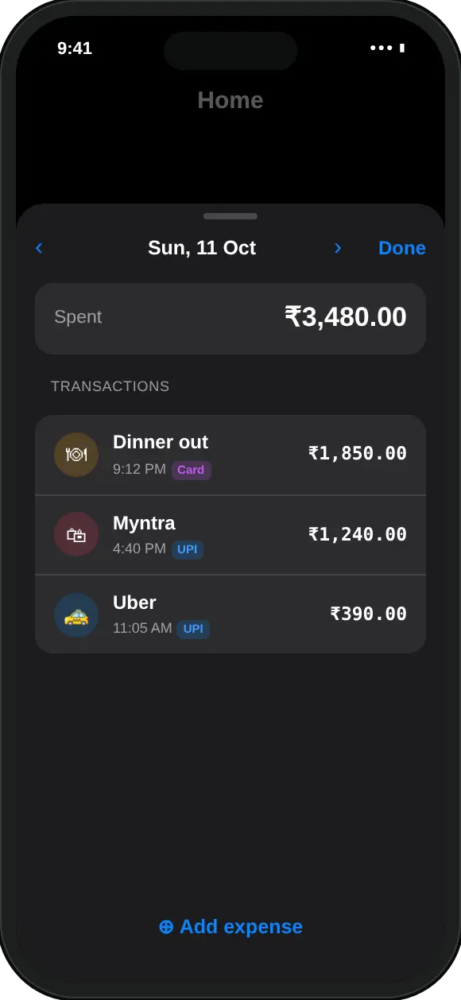

What is a spending heat map?
A calendar of the month where each day is coloured by how much you spent that day, compared with a daily pace.
In MoneyOS the grid runs Monday to Sunday across the top, with one row per week. A day at or under your daily pace is green, and the less you spent, the deeper the green. A day over pace is red, deepening until it reaches about twice the pace. A grey square is a day with nothing logged.
That is the whole point: a ₹3,000 dinner and a ₹200 chai day look the same in a monthly total, but not on the grid. You see the shape of the month at a glance, without scrolling through transactions.
How do I see the heat map in MoneyOS?
Open Home. The Spends so far card shows the heat map by default. Five steps:
- Open Home. Scroll to the Spends so far card.
- Choose Heat map. The card opens on Heat map. If it shows the chart, tap Heat map in the toggle at the top of the card.
- Read the colours. Green days are under your daily pace, red days are over it, and grey days have no spend. The pace in rupees per day is shown under the grid.
- Tap a coloured day. A sheet opens with that day's total and every transaction on it.
- Look at other months. Use the arrows beside the month name at the top of Home to see earlier months.
The same card can switch to Chart, which shows this month's spending so far against last month's. The heat map is better for finding particular days. The chart is better for seeing whether the month as a whole is running ahead.
What counts as “under pace” or “over pace”?
Each day is compared with a daily amount. MoneyOS picks the most specific one you have.
- Your daily limit, if you have set one. This is the same limit the Today line on Home uses.
- Otherwise, your monthly limit divided by the days in the month. A ₹45,000 limit in a 30-day month gives a pace of ₹1,500 a day.
- Otherwise, your recent average: the average daily spend over the last three months that had spending.
- With none of these, there is no pace. Days are shaded in one colour, darker for days closer to your busiest day of the month.
The pace in use is shown under the grid, for example ₹1,500.00/day. If you have not picked a number yet, see how to work out a safe daily spending limit from your salary.
What happens when I tap a day?
A sheet opens with that day's total and every transaction on it.
- Fix mistakes. Tap an entry to edit it, or press and hold to delete it.
- Step through days. Use the arrows at the top, or swipe left and right. It stops at today, so you cannot step into the future.
- Add what you forgot. Add expense opens the Add screen with that day's date already set.
Days later in the month are faded until they arrive. A future day with an entry on it, such as an EMI or subscription you have already marked paid, shows in full colour and can be tapped like any other day. To keep fixed payments separate from daily spending, see how to track EMIs alongside daily expenses.

How do I use a heat map to spend less?
Look for patterns across the red days, then put a limit on the thing they have in common.
A single red day is rarely a problem. A pattern usually is. A few things worth checking:
- Which weekdays are red? If the Saturday and Sunday columns are red week after week, weekends are where the budget goes.
- What the red days share. Tap two or three of them. If food delivery or shopping keeps coming up, a category budget for that one area may help more than a lower overall limit.
- The days after payday. A run of red at the start of the month often means money is being spent before bills and savings are set aside.
- Earlier months. Use the month arrows to compare. One unusual month matters less than the same red pattern three months in a row.
The map is only as complete as your entries. If most of your spending is UPI, importing your Google Pay and PhonePe screenshots fills in the days quickly. Everything stays on your iPhone; see our privacy policy or our introduction to MoneyOS.
Frequently asked questions
What is a spending heat map?
It is a calendar of the month where each day is coloured by how much you spent. In MoneyOS, green means under your daily pace, red means over it, and the deeper the colour, the further from pace that day was.
What daily pace does MoneyOS compare against?
Your daily limit if you have set one. Without it, your monthly limit divided by the days in the month. With neither, your average daily spend over the last three months that had spending.
What do the grey squares mean?
A grey square is a day with no spending logged. Empty days later in the month are faded because they have not happened yet.
Can I see what I spent on a red day?
Yes. Tap the day and a sheet shows the day's total and each transaction. You can edit an entry, step to the next or previous day, or add an expense dated to that day.
Does the heat map work without a budget?
Yes. If no limit is set and there is no spending history to work out a pace, each day is shaded by how it compares with your busiest day of the month instead.
Is MoneyOS free?
Yes. The whole app is free, with no subscription, no ads and no in-app purchases. There is no account and no bank login.